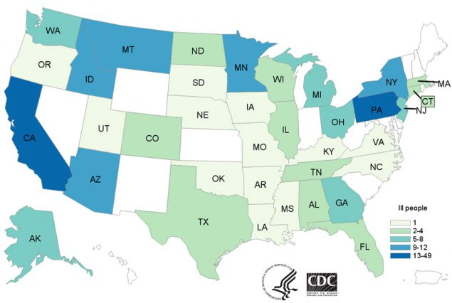
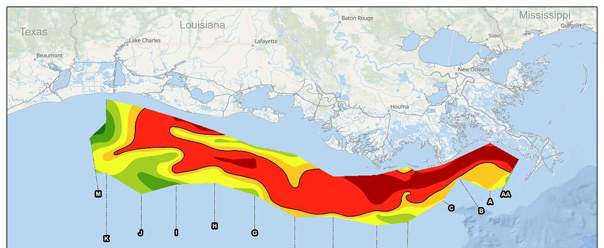
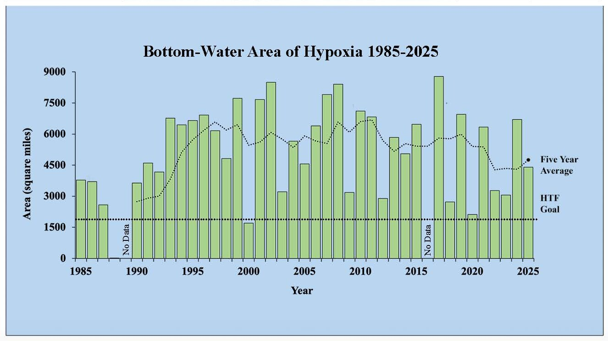

吃一口，
牽動什麼？
永續小食堂 2026.09.10
先玩一場，再看看食物背後發生了什麼事。
你喜歡的食物，
明年還能一樣嗎？
一樣容易買到？一樣的價格？一樣的味道？
地球也有安全範圍
7／9
2025 年評估
七項界限已越界
壓力持續累積，
生活更難維持穩定。
減少壓力，仍然有意義。

一份食物，會用到什麼？
- 種植與飼養：土地、水、肥料與飼料
- 加工與運送：設備、能源與包裝
- 生態也受影響：棲地、土壤與水中的生命
今天的玩法
- 第一節：食物版「誰是臥底」
- 把遊戲中說出的描述留下來
- 第二節：從工業革命看食物背後的代價
誰是臥底
10人
五組各派兩人
每輪換人上場
8＋2
八人拿相同食物
兩人拿另一種食物
每個人說一句
- 輪流描述，不能直接說出名稱或諧音
- 先想在哪裡遇到它、怎麼吃、誰會買
- 聽完一圈，參賽者同時指認可疑的人
台下也有任務
- 記下兩句參賽者的原話
- 圈一句你想追問的描述
- 想一想：這句話來自觀察，還是印象？
先試一圈
老師示範：描述「鉛筆」
- 我通常在學校遇到它。
- 用一段時間後，長度會改變。
第 1 輪
五組各派兩位新參賽者
一句描述，留下線索。
第 2 輪
五組各派兩位新參賽者
一句描述，留下線索。
第 3 輪
五組各派兩位新參賽者
一句描述，留下線索。
剛才，大家怎麼描述食物？
這些描述，藏著新的問題
- 「一年四季都有」：是怎麼做到的？
- 「每次味道差不多」：誰在維持？
- 「我覺得很健康」：這個印象從哪裡來？
等一下，我們來找
食物背後的人與做法
留下你最想追問的一句話。
剛才那些描述，
是怎麼變成理所當然的？
「一年四季都有」「每次味道差不多」「很方便」。
這些都不是自然發生的。
工業革命，是一場劇變
- 想到工業革命，通常想到蒸汽機、工廠與都市化
- 但社會的每一個層面都要跟著改變，例如家庭
- 農業也是其中之一
在那之前，
大多數人是自己食物的生產者
自己種、自己養、自己吃。
然後，農業被要求做一件難事
種田的人變少
大量人口離開農村，
進入工廠與城市
要餵的人變多
有限的農業人力，
要養活大量人口
這是一種巨大的進步
人類第一次有能力，生產出足以餵養全球人口的食物。
但是很諷刺
有人丟掉
食物是拿來賣的商品。
賣不掉、不好看的，
可能被丟掉
有人吃不飽
同一個時間，
地球上仍有很多人
營養不良
工業化的食物體系，
也付出代價
- 環境：土地、水、能源與生態
- 健康：誰在承擔看不見的風險
- 公平：誰得到好處，誰多付出
還有一件事：
工業革命帶來消費社會
過去
需求帶動生產。
有人要，才做。
工業化之後
為了讓生產線不停，
必須創造需求。
回到剛才的遊戲
你們說出口的特徵裡，
就有工業化生產與消費社會的痕跡。
例如，咖啡
- 台灣的消費量遠大於生產量，幾乎都靠進口
- 從栽種、採集、發酵、烘焙到沖煮，是高度分工的體系
- 台灣很晚才引入咖啡，而你們正好在「學喝咖啡」的年紀
為什麼要「學」喝咖啡？
沒有人需要學著喝水。
一樣東西要先被學會欣賞，才會有人持續買它。
故事一
2018 年，美國的生菜
健康的代價，會落在誰身上？
那年春天，
有人吃了生菜之後生病
生菜在中央工廠清洗、切分、混合包裝，再送往全國各地。
210 個人，36 個州
210人
感染同一株
大腸桿菌 O157:H7
分布在 36 個州。
96 人住院，其中 27 人
出現腎衰竭。
5 人死亡。

源頭指向一條灌溉渠道
驗出病菌的地方
亞利桑那州 Yuma 一段
約 3.5 英里的灌溉渠道
渠道旁邊
一座可容納
超過 10 萬頭牛的
大型飼養場
為什麼一塊田，
會變成 36 個州？
- 一塊田的收成，會和其他農場的生菜混在一起
- 集中清洗、切分、包裝，一次處理大量原料
- 再由物流送到全國的餐廳與超市
而且，追不太回來
FDA 追到 23 個農場、36 塊田，卻指不出唯一的那一塊。
出貨紀錄不完整，讓追溯變得非常困難。
你有辦法自己檢驗嗎？
你買一包生菜，看不出水源，也看不出前一手是誰。
而在現在的社會裡，
你也很難不從這個體系買東西。
故事二
密西西比河的出海口
環境的代價，會落在哪裡？
每年夏天，墨西哥灣會出現一片「死區」
4,402平方英里，2025 年 7 月實測的底層缺氧範圍。
約 11,400 平方公里，接近台灣本島面積的三分之一。

它是怎麼來的？
魚和蝦會離開這片海域。2025 年相當於 280 萬英畝的棲地暫時消失。
這不是今年才發生
40年
1985 年開始
每年夏天量測
五年平均 4,755 平方英里。
目標是 2035 年
降到 1,900 以下。

兩個故事，同一套體系
健康
風險落在
沒有能力檢驗的人身上
環境
成本落在
沒有參與決定的地方
所以要問的不是
「工業化好不好」
而是：便利是誰做出來的？
代價由誰承擔？
今天，我開始注意到……
一位以前沒注意到的人，
或一件以前沒想過的事。
還有，我想再問……
下週：一杯咖啡，
誰分到多少？
9/17 咖啡小農的生活